Code
curve(exp(-x^2/2), from = 0, to = 4, xlab = "Distance",
ylab = "Kernel value", lwd = 2,
main = "Squared exponential kernel",
bty = "n", las = 1)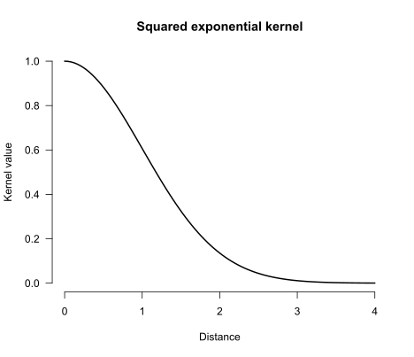
It’s common for researchers to reduce the objects in which they’re interested to a handful of summary statistics before submitting them to a statistical model. For instance, applied linguists interested in modelling text-quality ratings may want to take into account the rarity of the words used in the texts. To do so, they may look up the corpus frequency of each word used in the text, summarise the resulting distributions through their mean or median, and use these summaries in a linear regression model. But was any predictively useful information about the frequency distributions lost by reducing them to summary statistics? This blog post explains one way in which statistical models can be built that address this and similar questions by representing the input objects as full-fledged probability distributions.
Summarising distributions so that they can be used as predictors in statistical models may discard predictive information. It is possible to take into account full distributions (including multivariate ones) as inputs in predictive models by computing well-behaved distances between these distributions. If a model using these distances doesn’t outperform the model based on summary statistics on test data or in cross-validation, then the summary probably wasn’t losing much predictively relevant information. If it does, this may motivate a closer look at the input distributions to uncover which relevant aspects of them were glossed over by the summary statistics.
The idea is to compare the fit of predictive models in which the inputs are represented using summary statistics to ones in which the inputs are represented as full-fledged probability distributions. Before we can do so, we need to do some mise en place.
The first ingredient is that the most commonly used statistical methods in the social sciences (e.g., linear regression models) expect each input to be a row of numbers. Probability distributions are more complicated than such inputs, however. So instead, we’re going to use models that rely only on the pairwise similarities between the inputs. The first concept that I’ll discuss below, then, is similarity-based statistics.
Once we know how we can build statistical models based on pairwise similarities between the inputs, we still need a way to express similarities between probability distributions. To this end, we’re going to first compute distances between probability distributions, and then use these distances to express similarities. The second concept, then, concerns distances between distributions.
The third core idea is that a fair number of data structures that social scientists work with can be understood or represented as probability distributions. I’ll give some examples under the heading representing inputs as distributions.
With a basic appreciation of these three core concepts, we can finally turn to a few examples.
The most widely used tools for tackling classification and regression problems in the social sciences expect inputs to be represented as rows in a data frame. For instance, in linear regression, a participant’s predictor data may be represented as three numbers representing their sex, age, and language aptitude test score (i.e., a vector in three-dimensional Euclidean space), and their outcome data would be another number representing their L2 test score.
But certain statistical tools, including Gaussian process regression and support vector machines, don’t rely on such explicit representations of the predictor data. Instead, they rely on a notion of the pairwise similarities between different observations. The intuition behind tools based on pairwise similarities is that the prediction for a new observation is obtained from the outcomes of the known observations that are most similar to it. If you want to learn more about Gaussian process regression, Görtler et al. (2019) provide a wonderful interactive introduction. For another concise introduction, see Wang (2024); for a longer treatment, refer to Rasmussen and Williams (2006).
We can’t define the pairwise similarities willy-nilly, however: our notion of similarity needs to satisfy a number of technical conditions.1 If a function that takes in any two observations \(x_i\) and \(x_j\) outputs a valid similarity score \(k(x_i, x_j)\), we call it a kernel.
There exists a whole host of different functions that may serve as kernels, and different kernels correspond to different notions of similarity. On his blog Local optima, Anders Nielsen gives an extensive overview of the kernels that can be used in Gaussian process regression. For the purposes of this blog post, though, only so-called stationary kernels are relevant. These are kernels that depend only on the distance between the inputs \(x_i\) and \(x_j\), and not on the inputs themselves: the smaller the distance between the inputs, the greater the kernel value between them, that is, the greater their similarity. I elaborate on three types of stationary kernel in the collapsed info box below, but the main thing to appreciate is that the choice of kernel determines which kind of relationships between the input and the outcome the model accommodates. If you play around with the Shiny applet below, you’ll see this principle in action.
The squared exponential kernel, also called the Gaussian kernel or the radial basis function kernel, is defined as
\[k(x_i, x_j) = s^2\exp\left(-\frac{d(x_i, x_j)^2}{2t^2}\right),\]
with a scaling factor \(s^2 > 0\) and a length-scale \(t > 0\) as hyperparameters. The kernel earns one of its monikers from its resemblance to the density function of the Gaussian (Normal) distribution; see Figure 1.
curve(exp(-x^2/2), from = 0, to = 4, xlab = "Distance",
ylab = "Kernel value", lwd = 2,
main = "Squared exponential kernel",
bty = "n", las = 1)
It assigns large covariances to inputs that lie close to each other but near-zero covariances to inputs that are more distant. As a result, a model using this kernel can accommodate nonlinear relationships. Since the drop-off in the function graph above starts out fairly mildly, these expected nonlinear relationships are smooth.
This is visible in the plots in Figure 2. The plot on the left visualises the kernel/covariance matrix: neighbouring values have high covariances, distant values have low covariances. The plot on the right illustrates the type of association between the predictor and the outcome that a Gaussian process regression model with this kind of covariance matrix anticipates.
# Plotting function
plot_gpr <- function(x, K, n = 4, main = "") {
cols <- RColorBrewer::brewer.pal(n, "Dark2")
Y <- MASS::mvrnorm(n = n, mu = rep(0, length(x)), Sigma = K)
plot(x = x, y = Y[1, ], ylim = range(Y), type = "n", las = 1,
xlab = "x", ylab = "y", main = main, bty = "n")
for (i in seq_len(n)) {
points(x = x, y = Y[i, ], type = "l", col = cols[i])
}
}
draw_all <- function(x, K, n = 4) {
layout(matrix(c(0, 1, 2), nrow = 1), widths = c(0.1, 1, 2.2))
corrplot::corrplot(K, is.corr = FALSE, method = "color", tl.pos = "n")
x <- seq(-5, 5, length.out = ncol(K))
wanted <- c(-4, -2, 0, 2, 4)
pos <- sapply(wanted, function(v) which.min(abs(x - v)))
n <- ncol(K)
text(x = pos, y = n + 4.5, labels = wanted, xpd = NA)
text(x = -2.5, y = n - pos + 1, labels = wanted, xpd = NA)
mtext("Covariance matrix", line = -1, font = 2)
plot_gpr(x, K, main = "Four draws from prior distribution")
}
# Predictor data and distances between them
x <- seq(-5, 5, by = 0.1)
D <- outer(x, x, "-") |> abs()
# SE kernel
K_rbf <- exp(-D^2 / 2)
draw_all(x, K_rbf)
The power exponential kernel is a generalisation of the squared exponential kernel: \[k(x_i, x_j) = s^2\exp\left(-\left(\frac{d(x_i, x_j)}{t}\right)^{\kappa}\right)\] with an additional hyperparameter \(\kappa \in (0, 2]\). For \(\kappa = 2\), we obtain a squared exponential kernel with length-scale \(t/\sqrt{2}\).
The graph below shows how the kernel values depend on \(\kappa\). Note that for lower values of \(\kappa\), more distant observations (beyond the length-scale \(t\)) tend to have larger covariances than for higher values of \(\kappa\).
cols <- RColorBrewer::brewer.pal(3, "Dark2")
curve(exp(-abs(x)^(1/2)), from = 0, to = 4, xlab = "Distance",
ylab = "Kernel value", lwd = 2,
col = cols[1],
main = "Power exponential kernels",
bty = "n", las = 1, ylim = c(0, 1))
curve(exp(-abs(x)^(1)), add = TRUE, col = cols[2], lwd = 2)
curve(exp(-abs(x)^(3/2)), add = TRUE, col = cols[3], lwd = 2)
legend("topright", col = cols,
legend = c(
bquote(kappa == 1/2),
bquote(kappa == 1),
bquote(kappa == 3/2)
), lty = 1, lwd = 2
)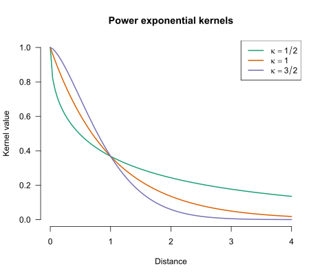
This is reflected in kinds of relationship that the model anticipates, as shown in Figure 4, Figure 5, and Figure 6.
K_pe32 <- exp(-D^(3/2))
draw_all(x, K_pe32)
K_pe1 <- exp(-D)
draw_all(x, K_pe1)
K_pe12 <- exp(-sqrt(D))
draw_all(x, K_pe12)
The \(\kappa\) parameter, then, allows you to fiddle with the degree of smoothness of the expected relationships.
An alternative way to fiddle with the degree of smoothness of the expected relationships is to turn to the Matérn covariance functions. The definition of this family of kernels is fairly complicated, but the important thing is that they have a smoothness parameter \(\nu\). Lower values of \(\nu\) correspond to more jagged anticipated relationships; higher values to smoother anticipated relationships. The values \(\nu = 1/2, 3/2, 5/2\) are popular because, for these values, the function can be expressed fairly easily.
matern <- function(d, nu, rho = 1) {
val <- 2^(1 - nu) / gamma(nu) * (sqrt(2 * nu) * d / rho)^nu * besselK(sqrt(2*nu)*d/rho, nu)
if (is.matrix(val)) diag(val) <- 1
val[d == 0] <- 1
val
}
curve(matern(x, nu = 1/2), from = 0, to = 4, xlab = "Distance",
ylab = "Kernel value", lwd = 2,
main = "Matérn kernels",
col = cols[1],
ylim = c(0, 1),
bty = "n", las = 1)
curve(matern(x, nu = 3/2), col = cols[2], lwd = 2, add = TRUE)
curve(matern(x, nu = 5/2), col = cols[3], lwd = 2, add = TRUE)
legend("topright", col = cols,
legend = c(
bquote(nu == 1/2),
bquote(nu == 3/2),
bquote(nu == 5/2)
), lty = 1, lwd = 2
)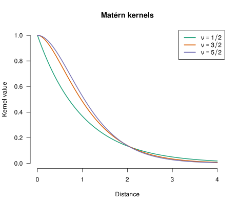
We can see the effect of the smoothness parameter in Figure 8, Figure 9, and Figure 10. Incidentally, the Matérn kernel with \(\nu = 1/2\) is identical to the power exponential kernel with \(\kappa = 1\).
K_matern52 <- matern(D, 5/2)
draw_all(x, K_matern52)
K_matern32 <- matern(D, 3/2)
draw_all(x, K_matern32) 
K_matern12 <- matern(D, 1/2)
draw_all(x, K_matern12) 
Below is a Shiny applet that you can use to generate some data and fit Gaussian process regression models to it. You can play around with the scaling factor \(s^2\), the length-scale \(t\) and a third hyperparameter \(\eta^2\). This last hyperparameter regulates how much the observed data may deviate from the fitted line. You can also tune these hyperparameters automatically by clicking Optimise hyperparameters. If you want to know how the automatic hyperparameter tuning works, see chapter 5 of Rasmussen and Williams’ (2006) book.
#| '!! shinylive warning !!': |
#| shinylive does not work in self-contained HTML documents.
#| Please set `embed-resources: false` in your metadata.
#| standalone: true
#| viewerHeight: 1800
library(shiny)
library(bslib)
library(corrplot)
# Stationary kernel functions --------------------------------------------------
rbf <- function(D, length_scale = 1, scaling_factor = 1) {
scaling_factor * exp(-D^2 / (2 * length_scale^2))
}
powerexp12 <- function(D, length_scale = 1, scaling_factor = 1) {
scaling_factor * exp(-(D / length_scale)^(1/2))
}
powerexp32 <- function(D, length_scale = 1, scaling_factor = 1) {
scaling_factor * exp(-(D / length_scale)^(3/2))
}
matern12 <- function(D, length_scale = 1, scaling_factor = 1) {
scaling_factor * exp(-D / length_scale)
}
matern32 <- function(D, length_scale = 1, scaling_factor = 1) {
r <- sqrt(3) * D / length_scale
scaling_factor * (1 + r) * exp(-r)
}
matern52 <- function(D, length_scale = 1, scaling_factor = 1) {
r <- sqrt(5) * D / length_scale
scaling_factor * (1 + r + r^2 / 3) * exp(-r)
}
kernel_list <- list(
"Squared exponential" = rbf,
"Power exponential (κ = 1/2)" = powerexp12,
"Power exponential (κ = 3/2)" = powerexp32,
"Matérn (ν = 1/2)" = matern12,
"Matérn (ν = 3/2)" = matern32,
"Matérn (ν = 5/2)" = matern52
)
# GP conditional distribution --------------------------------------------------
cond_dist <- function(x, x0, y0, noise_var = 1e-6, kernel, ...) {
mean_y <- mean(y0)
y0 <- y0 - mean_y
n <- length(x)
n0 <- length(x0)
D <- outer(c(x, x0), c(x, x0), "-") |> abs()
K <- kernel(D, ...)
K11 <- K[seq_len(n), seq_len(n)]
K12 <- K[seq_len(n), (n + 1):(n + n0)]
K22 <- K[(n + 1):(n + n0), (n + 1):(n + n0)] + noise_var * diag(n0)
L <- tryCatch(chol(K22), error = function(e) NULL)
if (is.null(L)) return(NULL)
alpha <- backsolve(L, forwardsolve(t(L), y0))
mu <- as.vector(K12 %*% alpha)
v <- forwardsolve(t(L), t(K12))
Sigma <- K11 - t(v) %*% v
list(y = mu + mean_y, se = pmax(sqrt(diag(Sigma)), 0))
}
# Hyperparameter optimisation --------------------------------------------------
# Just BFGS without gradients for now.
find_gpr_hyperparameters <- function(x0, y0, kernel, runs = 10) {
n <- length(y0)
# Centre y at 0
y_train <- y0 - mean(y0)
D <- outer(x0, x0, "-") |> abs()
# Obtain median distance between elements as useful length-scale init
med_d <- median(D[upper.tri(D)])
nll <- function(log_params) {
va <- exp(log_params[1])
ls <- exp(log_params[2])
lambda2 <- exp(log_params[3])
K <- kernel(D, length_scale = ls, scaling_factor = va) + lambda2 * diag(n)
U <- tryCatch(chol(K), error = function(e) NULL)
if (is.null(U)) return(Inf)
a <- backsolve(U, backsolve(U, y_train, transpose = TRUE))
drop(0.5 * crossprod(y_train, a) + sum(log(diag(U))) + n / 2 * log(2 * pi))
}
best <- NULL
for (i in seq_len(runs)) {
init <- c(
scaling_factor = runif(1, log(0.1), log(10)),
length_scale = runif(1, log(med_d * 0.1), log(med_d * 10)),
lambda2 = runif(1, -10, -2)
)
fit <- tryCatch(
optim(init, nll, method = "BFGS"),
error = function(e) NULL
)
if (!is.null(fit) && (is.null(best) || fit$value < best$value)) {
best <- fit
}
}
if (is.null(best)) return(NULL)
list(
scaling_factor = exp(best$par[1]),
length_scale = exp(best$par[2]),
lambda2 = exp(best$par[3]),
nll = best$value
)
}
# Preset functions -------------------------------------------------------------
preset_fns <- list(
"smooth function" = "x/7 + 0.01*x^2 + sin(cos(x)) + log(x^2 + 10)",
"jagged function" = "-0.05*x^2 + sin(1.5*x) + sign(sin(x))*1.5*abs(x %% 1 - 1/2)",
"Custom…" = NULL
)
# UI ---------------------------------------------------------------------------
ui <- page_sidebar(
title = "Gaussian process regression with a stationary kernel",
theme = bs_theme(bootswatch = "yeti"),
sidebar = sidebar(
width = 300,
accordion(
open = FALSE,
accordion_panel(
"Data-generating mechanism",
selectInput("preset_fn", "True function:",
choices = names(preset_fns),
selected = names(preset_fns)[1]),
conditionalPanel(
"input.preset_fn === 'Custom…'",
textInput("custom_fn", "f(x) =", value = "sin(x)",
placeholder = "e.g., sin(x) + 0.5*x")
),
sliderInput("x_range", "x range:",
min = -10, max = 10, value = c(-10, 10), step = 0.5),
numericInput("noise", "Observation noise σ²:",
value = 0.5, min = 0, step = 0.1)
)
),
accordion(
open = FALSE,
accordion_panel(
"Observations",
radioButtons("x0_mode", "Specify points:",
choices = c("Random" = "random", "Manual" = "manual"),
inline = TRUE,
selected = "random"),
conditionalPanel(
"input.x0_mode === 'random'",
sliderInput("n_pts", "Number of points:", 1, 100, 50,
step = 1, ticks = FALSE),
actionButton("resample", "Resample", class = "btn-primary w-100",
icon = icon("dice"))
),
conditionalPanel(
"input.x0_mode === 'manual'",
textInput("manual_x0", "x positions (comma-separated):",
value = "-9, -8, -7, -6, -5, -4, -3, -2, -1, 0, 1, 2, 3, 4, 5, 6, 7, 8, 9")
)
)
),
accordion(
open = FALSE,
accordion_panel(
"Kernel",
selectInput("kernel", "Kernel function", choices = names(kernel_list)),
uiOutput("hp_inputs"),
hr(),
tags$p("Optimise hyperparameters by maximising the
log marginal likelihood."),
sliderInput("opt_runs", "Restarts:",
min = 10, max = 100, value = 50, step = 1, ticks = FALSE),
actionButton("optimise", "Optimise hyperparameters",
class = "btn-primary w-100",
icon = icon("wand-magic-sparkles")),
uiOutput("opt_status")
)
)
),
layout_columns(
col_widths = 12,
card(
card_header("GP posterior"),
plotOutput("gp_plot", height = "420px")
),
card(
card_header("Kernel covariance k(x, x₀)"),
plotOutput("kernel_plot", height = "200px")
),
card(
card_header("Covariance matrix"),
plotOutput("corr_plot")
)
),
)
# Server -----------------------------------------------------------------------
server <- function(input, output, session) {
opt_msg <- reactiveVal(NULL)
opt_trigger <- reactiveVal(0)
opt_params <- reactiveVal(list(length_scale = 1, scaling_factor = 5,
log_noise_var = -0.3))
# Show hyperparameter inputs
output$hp_inputs <- renderUI({
p <- opt_params()
tagList(
numericInput("length_scale", "Length scale t",
value = round(p$length_scale, 4), min = 0.01, step = 0.1),
numericInput("scaling_factor", "Scaling factor s²",
value = round(p$scaling_factor, 4), min = 0.01, step = 0.1),
numericInput("log_noise_var", "Noise variance η² (log-10 scale)",
value = round(p$log_noise_var, 2), step = 0.5)
)
})
# Parse target function
f <- reactive({
expr_str <- if (input$preset_fn == "Custom…") input$custom_fn
else preset_fns[[input$preset_fn]]
tryCatch(
eval(parse(text = paste0("function(x) ", expr_str))),
error = function(e) NULL
)
})
# Observation x locations
x0_vals <- reactive({
input$resample
if (input$x0_mode == "random") {
set.seed(input$resample)
sort(runif(input$n_pts, input$x_range[1], input$x_range[2]))
} else {
vals <- suppressWarnings(
as.numeric(trimws(strsplit(input$manual_x0, ",")[[1]])))
sort(vals[!is.na(vals)])
}
})
# Observations
obs <- reactive({
fn <- f()
if (is.null(fn)) return(NULL)
x0 <- x0_vals()
y0 <- fn(x0) + rnorm(length(x0), sd = sqrt(input$noise))
list(x0 = x0, y0 = y0)
})
# Prediction grid
x_grid <- reactive({
seq(input$x_range[1], input$x_range[2], length.out = 201)
})
# Step 1: show spinner and fire trigger
observeEvent(input$optimise, {
xy0 <- obs()
if (is.null(xy0) || length(xy0$x0) < 3) {
opt_msg(tags$span("⚠ Need at least 3 observations to optimise."))
return()
}
opt_trigger(isolate(opt_trigger()) + 1)
})
# Step 2: run optimisation
observeEvent(opt_trigger(), {
req(opt_trigger() > 0)
xy0 <- isolate(obs())
kern <- kernel_list[[isolate(input$kernel)]]
result <- tryCatch(
find_gpr_hyperparameters(xy0$x0, xy0$y0, kernel = kern,
runs = isolate(input$opt_runs)),
error = function(e) NULL
)
if (is.null(result)) {
opt_msg(tags$span("✗ Optimisation failed. Try different settings."))
return()
}
opt_params(list(
length_scale = result$length_scale,
scaling_factor = result$scaling_factor,
log_noise_var = max(log10(result$lambda2), -30)
))
opt_msg(tags$span(
style = "color:#27ae60; font-size:0.82rem;",
sprintf("✓ Done. t = %.2f, s² = %.2f, η² = 10^%.1f (NLL = %.1f)",
result$length_scale, result$scaling_factor,
log10(result$lambda2), result$nll)
))
}, ignoreInit = TRUE)
output$opt_status <- renderUI({ opt_msg() })
# Active hyperparameters: opt_params when set, else input values
hp <- reactive({
p <- opt_params()
ls <- if (!is.null(input$length_scale)) input$length_scale
else p$length_scale
sf <- if (!is.null(input$scaling_factor)) input$scaling_factor
else p$scaling_factor
nv <- if (!is.null(input$log_noise_var)) input$log_noise_var
else p$log_noise_var
list(length_scale = ls, scaling_factor = sf, log_noise_var = nv)
})
# GP fit
gp_fit <- reactive({
fn <- f()
if (is.null(fn)) return(NULL)
xy0 <- obs()
kern <- kernel_list[[input$kernel]]
p <- hp()
req(p$length_scale, p$scaling_factor, p$log_noise_var)
fit <- cond_dist(x_grid(), xy0$x0, xy0$y0,
noise_var = 10^p$log_noise_var,
kernel = kern,
length_scale = p$length_scale,
scaling_factor = p$scaling_factor)
list(fit = fit, x0 = xy0$x0, y0 = xy0$y0)
})
# GP posterior plot
output$gp_plot <- renderPlot({
fn <- f()
obj <- gp_fit()
fit <- obj$fit
x0 <- obj$x0
y0 <- obj$y0
x <- x_grid()
par(mar = c(4, 4, 1, 1), bg = "white", family = "sans")
y_fn <- if (!is.null(fn)) fn(x) else rep(0, length(x))
ylim_base <- if (!is.null(fit)) {
range(c(fit$y + 2.5 * fit$se, fit$y - 2.5 * fit$se, y_fn), na.rm = TRUE)
} else {
range(y_fn, na.rm = TRUE)
}
ylim <- ylim_base + diff(ylim_base) * c(-0.05, 0.05)
plot(NULL, xlim = input$x_range, ylim = ylim,
xlab = "x", ylab = "y", bty = "l", las = 1)
grid(col = "grey90", lty = 1)
if (!is.null(fit)) {
ord <- order(x)
px <- x[ord]
pmu <- fit$y[ord]
pse <- fit$se[ord]
valid <- is.finite(pmu) & is.finite(pse)
px <- px[valid]
pmu <- pmu[valid]
pse <- pse[valid]
poly_x <- c(px, rev(px))
poly_y <- c(pmu + 2 * pse, rev(pmu - 2 * pse))
polygon(poly_x, poly_y, col = adjustcolor("#2c7bb6", 0.15), border = NA)
lines(px, pmu, col = "#2c7bb6", lwd = 2.5, lty = 1)
}
if (!is.null(fn)) {
lines(x, y_fn, col = "#d7191c", lwd = 1.5, lty = 2)
}
points(x0, y0, pch = 21, bg = "white", col = "#333", cex = 1.6, lwd = 2)
legend("topright", bty = "n", cex = 0.85,
legend = c("Posterior mean", "±2 SE", "True function", "Observations"),
lty = c(1, NA, 2, NA),
pch = c(NA, 15, NA, 21),
lwd = c(2.5, NA, 1.5, NA),
col = c("#2c7bb6", adjustcolor("#2c7bb6", 0.3), "darkred", "#333"),
pt.cex = c(NA, 2, NA, 1.6))
})
# Kernel covariance plot -----------------------------------------------------
output$kernel_plot <- renderPlot({
kern <- kernel_list[[input$kernel]]
p <- hp()
req(p$length_scale, p$scaling_factor)
d_seq <- seq(0, max(abs(input$x_range)), length.out = 300)
k_val <- kern(d_seq,
length_scale = p$length_scale,
scaling_factor = p$scaling_factor)
par(mar = c(4, 4, 0.5, 1), bg = "white", family = "sans")
plot(d_seq, k_val, type = "l", col = "#2c7bb6", lwd = 2,
xlab = "|x - x₀|", ylab = "k(x, x₀)", bty = "l", las = 1,
ylim = c(0, p$scaling_factor * 1.05))
grid(col = "grey90", lty = 1)
abline(h = p$scaling_factor, lty = 3, col = "grey60")
})
# Implied covariance matrix -------------------------------------------------
output$corr_plot <- renderPlot({
x0 <- obs()$x0 |> sort()
kern <- kernel_list[[input$kernel]]
p <- hp()
req(p$length_scale, p$scaling_factor, p$log_noise_var)
D <- outer(x0, x0, "-") |> abs()
M <- kern(D,
length_scale = p$length_scale, scaling_factor = p$scaling_factor)
corrplot(M,
method = "color",
is.corr = FALSE,
tl.col = "black",
tl.cex = 0.8)
}, height = 380, width = 380)
}
shinyApp(ui, server)The goal is to apply kernel methods to input that are represented as distributions. To this end, we need a suitable distance metric between probability distributions. When dealing with univariate distributions, it turns out that the Wasserstein distance between probability distributions can be useful. Informally, the Wasserstein distance between probability distributions \(P\) and \(Q\) expresses what the least amount of effort is that you need to expend in order to shift about the probability mass of distribution \(P\) so that it corresponds to distribution \(Q\).
Consider two finite distributions.
The most efficient way of turning distribution \(P\) into distribution \(Q\) is this:
The total cost of this operation is \(14/8 = 1.75\). The Wasserstein distance (of order \(p = 1\)) is hence 1.75. See Figure 11.
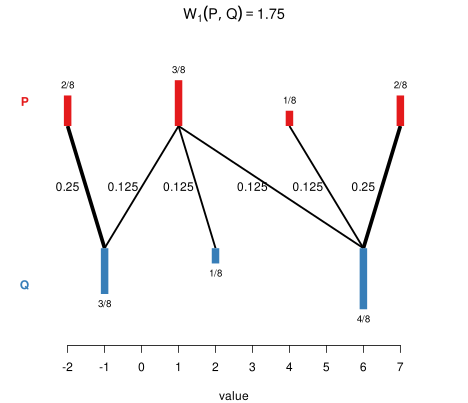
More generally and more formally, for any \(p \in [1, \infty)\), we define the Wasserstein distance of order \(p\) between two probability distributions with finite \(p\)-th moment as
\[\mathbf{W}_p(P, Q) := \min_{\substack{X \sim P,\\Y \sim Q}}\left(\mathbb{E}(|X - Y|^p)\right)^{1/p}.\]
That may look a bit complicated, but it’s pretty easy to compute if \(P\) and \(Q\) are empirical distributions; see Algorithm 2.1 in my thesis (Vanhove 2026). While the Wasserstein distance is a true distance for any \(p \in [1, \infty)\), only two values of \(p\) are useful in our kernel approach:
The reason is that kernels need to satisfy certain technical requirements. For the stationary kernels discussed above, these requirements are met if the distances used are ‘Hilbertian’. The details don’t need to concern us here. What’s important is that the \(\mathbf{W}_2\) distance is Hilbertian, and square-root transforming the \(\mathbf{W}_1\) distance makes it Hilbertian. Hence, both \(\mathbf{W}_2\) and \(\sqrt{\mathbf{W}_1}\) can be plugged into the three kinds of stationary kernel discussed earlier.
Incidentally, the Wasserstein distance goes by a few different names, including the earth mover’s distance (if \(p = 1\)), the Kantorovich–Rubinstein metric, and the Mallow distance.
The Wasserstein distance can also be defined on spaces of multivariate probability distributions. But there are two snags:
One workaround is to work with Wasserstein distances between marginal distributions; let’s call these marginal Wasserstein distances. For instance, if the distributions we’re working with live in three dimensions, we compute Wasserstein distances between the three corresponding dimensions. Each of these are distances between univariate distributions, so we can use them as before: we construct a kernel for each of the dimensions, and then combine them.
One drawback of relying on marginal distributions only is that two distributions may look completely different from one another yet have the same marginal distributions, as in Figure 12.
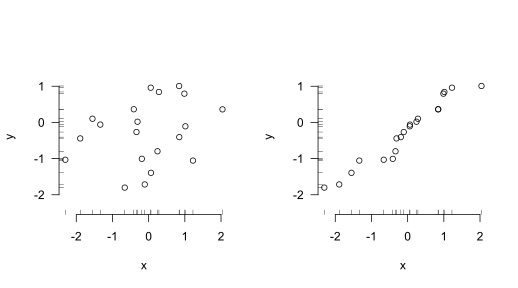
A kernel based on marginal distributions only couldn’t tell distributions with the same marginals but different joint distributions apart – and it’s possible that the relevant signal isn’t contained in the marginals but rather in how the different components are related to each other.
Marginal Wasserstein distances are just Wasserstein distances between one-dimensional projections of the distributions. One option to capture some of the difference between the two distributions shown in Figure 12 is to project the distributions onto the line of identity and compute the Wasserstein distance between the resulting univariate distributions; see Figure 13.
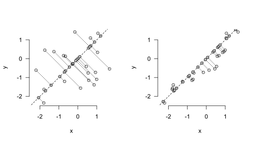
The sliced Wasserstein distance generalises this approach: Rather than considering just projections onto the coordinate axes (as for marginal Wasserstein distances) or onto the line of identity (as in the example above), we consider all possible projections on lines through the origin and aggregate the Wasserstein distances between the resulting one-dimensional distributions. In practical terms, we pick a bunch of lines through the origin at random, project the distributions on them, compute the Wasserstein distances between them, and aggregate them.
Sliced Wasserstein distances are fairly cheap to compute. Crucially, if they are based on \(\mathbf{W}_2\) or \(\sqrt{\mathbf{W}_1}\) distances between the univariate projections, they are Hilbertian. This means that they can be slotted into the three stationary kernels. Moreover, they take the entire distributions into account, not just their marginals. Sliced Wasserstein distances based on \(\mathbf{W}_2\) and \(\sqrt{\mathbf{W}_1}\) are denoted as \(\mathbf{SW}_2\) and \(\sqrt{\mathbf{SW}_1}\), respectively.
There are, of course, some disadvantages to using sliced Wasserstein distances.
First, well, they take into account the entire distributions… This includes aspects that may not be relevant for the regression task, which may downgrade performance.
Second, sliced Wasserstein distances are scale-sensitive in a more annoying way than Wasserstein and marginal Wasserstein distances are. To elaborate, let’s say we’re comparing distributions of body heights measured in centimetres and find that the Wasserstein distance between them is 6.7. If we re-express the same body heights into millimetres, we’d find that the Wasserstein distance between the distributions is ten times larger, i.e., 67. Wasserstein distances, then, are scale-sensitive. But crucially, in all of the three stationary kernels above, we can simply adjust the length-scale so that the resulting kernel values are still the same.
This doesn’t quite work for sliced Wasserstein distances. If we have two-dimensional distributions in which one dimension represents body heights and another body weights, re-expressing the body heights from centimetres to millimetres doesn’t have a predictable effect on the distances between the distributions. As a result, we can’t adjust the length-scale of the kernel to absorb changes in the scale of the data. So when working with sliced Wasserstein distances, it’s probably a good idea to standardise the input distributions in some way so that the results don’t depend on the arbitrary scale on which the data are expressed.
I wrote the slicer package to carry out sliced Wasserstein computations.
Wasserstein and sliced Wasserstein distances are not the only ways to express differences and similarities between distributions; they are merely the ones that I’m most familiar with because I wrote a thesis on them. For some other options, see Muandet et al. (2017), Szabó et al. (2016), and Székely and Rizzo (2013).
Many important data types don’t occur naturally as rows in a data frame. Consider the following three examples:
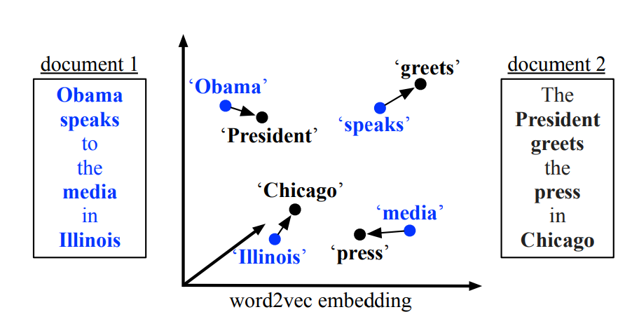
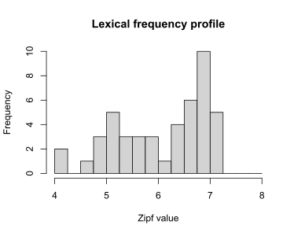
In all of these cases, we can try to represent certain characteristics of the objects (e.g., the mean Zipf value) in feature vectors which can then be input into linear regression, random forests, etc. While this inevitably results in a loss of information, the hope is that the feature vector captures the relevant aspects.
One alternative is to either treat or encode the objects as probability distributions in the hopes that this loses less relevant information than a representation by means of a feature vector does. For lexical frequency profiles and point clouds, this representation as a probability distribution is immediate: We treat the lexical frequency profile or the point cloud as an empirical distribution in one- or multidimensional space, respectively. More generally, any time the inputs \(x_1, \dots, x_N\) are \(n_i \times d\) matrices (with possibly varying row numbers \(n_i\)), we can treat them as empirical \(d\)-dimensional distributions based on samples of size \(n_i\).
For graphs such as molecular structures or social networks, a bit more work is required before the machinery introduced above can be brought to bear, but useful encodings of graphs as probability distributions exist; see Carpintero Perez et al. (2024) for an example.
The third core concept, then, is that if the data don’t naturally occur as rows in a data frame, it may be possible to represent them more faithfully as probability distributions, allowing the Wasserstein–kernel approach to be brought to bear on them.
I’m not going to advocate for the whole-scale adoption of kernels methods and Wasserstein and sliced Wasserstein distances in our field. But I think these techniques could on occasion be useful, for instance to gauge if a simpler approach in which the input distributions are summarised through a handful of statistics leaves any money on the table.
To illustrate what I mean, I present three examples.
This blog post is long and complicated enough as it is. I’d rather not exacerbate this by including lots of R code that takes a fair amount of time to run. Instead, I’ll give a high-level description of what I did. I used similar examples for my thesis, though, and the R code for those is available from GitHub.
Let’s first put the concepts above to the test in a toy example in which the predictive signal is hidden partly in the marginal distributions but mostly in the joint distributions.
Data. Figure 14 shows the set-up: Empirical distributions are generated from bivariate Gaussian mixtures with four isotropic components laid out symmetrically around the origin. These distributions differ from one another in that they are rotated counterclockwise by an angle \(\omega \in [0, 3\pi/8]\). The goal of the analysis is to retrieve the specific angles by which the distributions have been rotated.
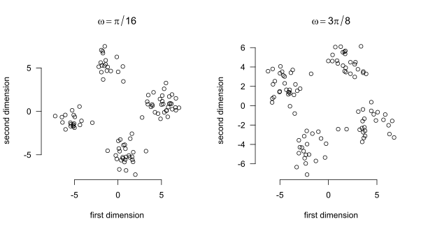
This example is constructed in such a way that the means of the distributions carry no information about the rotation angle \(\omega\). Moreover, the marginal distributions carry some but not all information: the marginal distributions are the same for a rotation angle of \(\pi/4 + \delta\) as for a rotation angle of \(\pi/4 - \delta\). As a result, a model relying on the marginal distributions only can’t distinguish between, say, \(\omega = \pi/6 = \pi/4 - \pi/12\) and \(\omega = \pi/3 = \pi/4 + \pi/12\). Rotation angles in \([0, \pi/8)\), by contrast, don’t have a ‘mirror distribution’ with identical marginals, so models relying on marginal distributions should perform well on these. The joint distributions, however, are in principle distinguishable for any \(\omega \in [0, 3\pi/8]\).
All this means that we expect a model based on means not to outperform the baseline at all, whereas a model based on the marginal distributions will do so. However, both models will be outperformed by models that also take into account the joint distributions.
I sampled rotation angles \(\omega_i \sim \textrm{Uniform}([0, 3\pi/8])\) independently, \(i = 1, \dots, 150\), and used these to generate \(N = 150\) empirical distributions \(P_1, \dots, P_N\) based on \(n = 100\) observations each.
Analysis. Fifty distributions served as the training set; the remaining hundred as the test set. I fitted four Gaussian process models using the training set.
All kernels were radial basis function kernels with tuned hyperparameters. For models based on several kernels, these were added together; this amounts to modelling main effects of the different kernels.
The fit of the predictions to the test data was assessed through the root mean squared error (RMSE) and the negative log predictive density (NLPD). The RMSE purely assesses fit of the predictions to the test data and is defined as \[\sqrt{\frac{1}{n}\sum_{i=1}^n(y_i - \hat y_i)^2},\] where \(y_1, \dots, y_n\) are the true outcomes in the test set and \(\hat y_1, \dots, \hat y_n\) are the corresponding predicted outcomes.
Gaussian process regression models don’t just produce point predictions; they generate an entire joint distribution for the predictions. This distribution takes the form of a Normal distribution with a mean vector \(\hat{\boldsymbol \mu} = (\hat y_1, \dots, \hat y_n)^{\top}\) and a covariance matrix \(\hat{\boldsymbol \Sigma} \in \mathbb{R}^{n \times n}\). The NLPD is defined as \[-\log p(y_1, \dots, y_n; \hat{\boldsymbol \mu}, \hat{\boldsymbol \Sigma}),\] where \(p(\cdot; \hat{\boldsymbol \mu}, \hat{\boldsymbol \Sigma})\) denotes the density function of the \(n\)-variate Normal distribution with mean vector \(\hat{\boldsymbol \mu}\) and covariance matrix \(\hat{\boldsymbol \Sigma}\).
In crossvalidation, I use the average NLPD instead of the formula above. That is, I compute the NLPD for each (univariate) prediction and then average these values.
Both metrics have in common that ‘lower is better’.
Results. The table below summarises the results of the different models. A baseline model that just assigns the training set mean to the test set observations has a RMSE of \(0.33\) radians.
| Model | RMSE | NLPD |
|---|---|---|
| (1) Means | 0.35 | 0.43 |
| (2) Marginal \(\mathbf{W}_2\) | 0.26 | 0.20 |
| (3) Marginal \(\mathbf{W}_2\) + \(\mathbf{SW}_2\) copula | 0.10 | -1.11 |
| (4) \(\mathbf{SW}_2\) | 0.10 | -1.40 |
Figure 15 shows the models fits graphically.
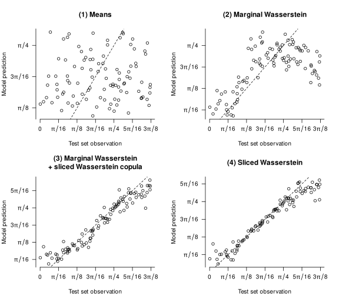
Discussion. The results match our expectations. Relying on merely the means throws away all predictive information in the inputs: the first model doesn’t perform better than the baseline. Adding the marginal distributions improves performance considerably, but as a comparison of models 2 and 3 reveals, a lot of information is contained in the copula (i.e., in how both variables are associated). The two models based on sliced Wasserstein distances that take into account the whole distributions (rather than just the marginals) correspondingly outperform the other models.
Of course, this example is extremely artificial. But it does show that, in principle, this approach can help analysts to identify situations in which relying on summary statistics throws away useful information.
Let’s now turn to two more realistic examples.
Context. In Vanhove et al. (2019), we had raters evaluate over 3,000 texts in terms of their lexical richness. We then tried to build models that predict these ratings by means of indices that can be computed more or less automatically from the texts. One of these was the mean of the distribution of the frequencies of the lemmata encountered in the text according to an external corpus (“lexical frequency profiles”). Could we improve such models by taking the whole frequency distributions into account rather than just their means?
Data. The dataset comprises 3,060 short narrative and argumentative texts in French, German, and Portuguese (about 1,000 texts per language). These texts were written by children living in Switzerland and Portugal aged between about 8 and 10 years, and the median text lengths were 37, 33, and 39 tokens, respectively. These texts were corrected morphosyntactically, orthographically, and in terms of their punctuation before rating and lexical analysis.
For each language, the texts were split up into twenty batches of 50 to 52 texts. Each batch was rated by a separate panel of untrained adult native speakers of the language in question. These raters were asked to rate the lexical richness of each of the 50–52 texts on a scale from 1 (worst) to 9 (best). Each batch was rated by between three and eighteen raters, with the average number of raters being 7.3 for French, 16.1 for German, and 5.3 for Portuguese. The mean rating per text serves as the text-quality rating to be predicted.
Lexical metrics. The lexical metrics used in this reanalysis are the same as those used in one of the models we fitted in Vanhove et al. (2019). I refer to these metrics as the ‘volume’, ‘variability’, ‘evenness’, ‘disparity’, ‘dispersion’, and ‘rarity’ predictors. As far as the first five of these predictors are concerned, the details don’t matter for our present purposes; please refer to the original article if you’re interested.
It is the sixth predictor, rarity, that is the focus of this reanalysis. It consists of the mean Zipf score of the unique lemmata in the text. The Zipf score is a transformation of corpus frequency that is thought to better capture language users’ perception of the relative frequency of words (van Heuven et al. 2014).
Reanalysis. For the original article, we split up the dataset into sixteen batches of texts per language for training the models and four batches per language for testing them. For the reanalysis, I’ll do the same, using the same training and testing split as in the original.
In the original article, we used generalised additive models. For this reanalysis, I’ll use Gaussian process regression even for the models that don’t include distributional inputs. The reason is that I don’t want the comparisons between the models to be tainted by differences in the models’ architectures.
For each of the six metrics, I constructed a squared-exponential kernel. Additionally, I constructed squared-exponential kernels for two distributional inputs: the Zipf frequency scores of the unique lemmata occurring in the texts, and the mean-centred version of these Zipf scores.
For each language, I fitted four models:
Results. The table below summarises the test set performance of the four models for each of the three languages.
| Language | Zipf included? | RMSE | NLPD |
|---|---|---|---|
| French | (1) no | 1.02 | 1.45 |
| (2) mean | 0.98 | 1.42 | |
| (3) distribution | 0.97 | 1.39 | |
| (4) mean and centred distribution | 0.98 | 1.41 | |
| German | (1) no | 0.88 | 1.29 |
| (2) mean | 0.79 | 1.18 | |
| (3) distribution | 0.80 | 1.20 | |
| (4) mean and centred distribution | 0.79 | 1.19 | |
| Portuguese | (1) no | 0.91 | 1.34 |
| (2) mean | 0.87 | 1.29 | |
| (3) distribution | 0.89 | 1.30 | |
| (4) mean and centred distribution | 0.88 | 1.30 |
Discussion. For all three languages, adding a kernel based on the mean Zipf scores improves model performance. Comparing models (4) to (2), however, shows that that adding information about the shape of the distributions doesn’t improve the models any further. Comparing models (3) to (2) confirms this: if the non-centred distributions are fed to a kernel, the models perform similarly to when the distribution means are used, not better.
For these short texts, then, we don’t find evidence that the mean of the Zipf scores throws away predictively useful information about the texts’ lexical profiles. It is, of course, quite possible that longer texts would have allowed us to pick up on predictively useful differences between the shapes of the distributions. Another caveat is that I didn’t go the whole hog and try out different types of kernel, but I doubt that the results would look much different if I’d used Matérn or power exponential kernels or kernels based on \(\sqrt{\mathbf{W}_1}\) distances instead.
The previous example featured lots of univariate distributions based on fairly small samples; the present one features a handful of multivariate distributions based on large samples.
Context and data. Eckermann et al. (2021) studied the hippocampi of twenty diseased individuals. Skipping over many details, each of these hippocampi was represented by an \(n_i \times 5\) matrix, with the number of rows \(n_i\) varying from 2,748 to 37,348 (median: 17,069). Each of these rows represented a neuron detected in the hippocampus in terms of five measurements; again the details are not crucial for our purposes. What is important, though, is that these five properties were measured on entirely different scales. Figure 16 shows what the data for one of the twenty hippocampi look like.

For the purposes of this reanalysis, the goal is to build a predictive model of the entropy of the first variable (Neighbours) using the information contained in the other four variables. This wasn’t Eckermann et al.’s goal, but it illustrates how the techniques discussed in this post can be put to use; the entropy outcome is merely an arbitrary target.
Analysis. Since the number of input matrices is small (\(N = 20\)), I used leave-one-out crossvalidation (LOOCV) to compare the predictive accuracy of the different models. This means that the outcome value of each hippocampus was predicted based on models that were trained only on the other nineteen hippocampi.
I fitted a number of different models. Like in the previous examples, all kernels used were squared-exponential kernels.
Some further explanation:
Results. The following table summarises how well each model predicted the out-of-fold data. For the NLPD, both the mean and the standard deviation over the twenty outcomes are shown. For reference, a baseline model that does not take into account any predictors and just outputs the mean of the training set outcome scores an RMSE of 0.165.
| Model | RMSE | NLPD (mean \(\pm\) SD) |
|---|---|---|
| (1) Medians | 0.13 | 12.42 \(\pm\) 22.83 |
| (2) Marginal \(\mathbf{W}_2\) | 0.17 | 0.59 \(\pm\) 2.10 |
| (3) Marginal \(\mathbf{W}_2\) + \(\mathbf{SW}_2\) on copula | 0.11 | -0.70 \(\pm\) 1.63 |
| (4) \(\mathbf{SW}_2\) on scaled inputs | 0.15 | -0.36 \(\pm\) 0.99 |
Figure 17 shows the fit of the predictions to the true values; points close to the dashed line represent more accurate predictions.
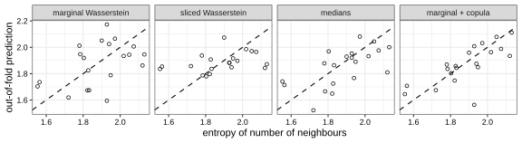
Discussion. The medians-only model outperforms the models based on marginal Wasserstein distances and on sliced Wasserstein distances in terms of the RMSE. However, the large mean NLPD value for this model, coupled with a large standard deviation, shows that for some out-of-fold predictions, the model’s uncertainty estimates were badly overconfident.
Still, the comparison of model (1) on the one hand and models (2) through (4) the other highlights that the Wasserstein–kernel approach isn’t a silver bullet. The median representations may be serviceable (in terms of their RMSE) precisely because they do not capture the full (joint or marginal) distributions; the Wasserstein-based kernels capture these warts and all (i.e., distributional aspects that simply aren’t relevant to the task at hand).
Further, each input distribution in the present example is based on a substantial number of observations, but only few distributions were available to train and evaluate the regression models on, and the models may struggle to find adequate hyperparameter values that allow them to outperform this simpler representation.
Finally, a model using both the marginal Wasserstein distances and a kernel based on the sliced Wasserstein distances between the copulae (i.e., the dependency structure between the variables) seems to perform best of all. This could suggest that some of the relevant information in the data isn’t contained in the marginal distributions but rather in the associations between the different variables. But with \(N = 20\), these speculations are tenuous at best.
One way to check if summarising input distributions by a mean, median or some other small number of statistics loses useful information is to compute the (sliced) Wasserstein distances between them and then use these distances in a kernel-based model such as Gaussian process regression. If this model predicts new data no better than the summary-based model, the summary probably wasn’t losing a lot of useful information. If it does better, it may be worth examining the distributions to figure out what the summaries missed and how to capture it better.
The first example shows the promise of this approach. The signal was hidden entirely in the shape of the distribution rather than in their location. The sliced Wasserstein-based approach was able to demonstrate that the summary-based model missed crucial information. The other two more realistic examples, meanwhile, underscore the limits of the approach: models that take into account richer representations of the inputs don’t have to outperform models based on leaner representations. Of course, it’s always possible that with more data (longer texts, more hippocampi), a model incorporating sliced Wasserstein distances could find some additional signal in the richer distributional representations. But for the data at hand, this does not seem to have been the case.
In sum, the approach above doesn’t turbo-charge predictive models derived from distributional inputs. But it may serve as a diagnostic tool to check if models based on summary statistics are leaving money on the table.
Carpintero Perez, Raphaël, Sébastian Da Veiga, Josselin Garnier and Brian Staber. 2024. Gaussian process regression with sliced Wasserstein Weisfeiler–Lehman graph kernels. Proceedings of Machine Learning Research 238. 1297–1305.
Eckermann, Marina, Bernhard Schmitzer, Franziska van der Meer, Jonas Franz, Ove Hansen, Christine Stadelmann and Timm Salditt. 2021. Three-dimensional virtual histology of the human hippocampus based on phase-contrast computed tomography. PNAS 118(48). e2113835118.
Görtler, Joachim, Rebecca Kehlbeck and Oliver Deussen. 2019. A visual exploration of Gaussian processes. Distill.
Kusner, Matt, Yu Sun, Nicholas Kolkin and Kilian Weinberger. 2015. From word embeddings to document distances. Proceedings of Machine Learning Research 37. 957–966.
Muandet, Krikamol, Kenji Fukumizu, Bharath Sriperumbudur and Bernhard Schölkopf. 2017. Kernel mean embedding of distributions: A review and beyond. Foundations and Trends in Machine Learning 10(1-2). 1–141.
Rasmussen, Carl Edward and Christopher K. I. Williams. 2006. Gaussian processes for machine learning. MIT Press.
Szabó, Zoltán, Bharath K. Sriperumbudur, Barnabás Póczos and Arthur Gretton. 2016. Learning theory for distribution regression. Journal of Machine Learning Research 17(152). 1–40.
Székely, Gábor J. and Maria L. Rizzo. 2013. Energy statistics: A class of statistics based on distances. Journal of Statistical Planning and Inference 143(8). 1249–1272.
van Heuven, Walter J. B., Pawel Mandera, Emmanuel Keuleers and Marc Brysbaert. 2014. SUBTLEX-UK: A new and improved frequency database for British English. Quarterly Journal of Experimental Psychology 67(6). 1176–1190.
Vanhove, Jan. 2026. Sliced Wasserstein distances and their application to regression problems. Master’s thesis. University of Bern.
Vanhove, Jan, Audrey Bonvin, Amelia Lambelet and Raphael Berthele. 2019. Predicting perceptions of the lexical richness of short French, German, and Portuguese texts using text-based indices. Journal of Writing Research 10(3). 499–525.
Wang, Jie. 2024. An intuitive tutorial to Gaussian process regression. arXiv.
First, for any two objects \(x\) and \(x'\), \(x\) must be as similar to \(x'\) as \(x'\) is to \(x\). Second, if you put the pairwise similarities between the objects \(x_1, \dots, x_n\) in a matrix, \(K = (k(x_i, x_j))_{i,j = 1}^n\) the matrix must be positive semi-definite for any possible choice of \(n\) input objects and for any \(n\).↩︎
The different kernels were added together after their scaling factors and length-scales were tuned.↩︎